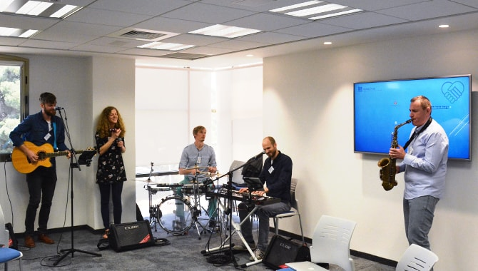

Members of “Israel, We Stand With You,” a group of German musicians who are keen supporters of Israel and who use their music to share messages of encouragement and support for the State, have been visiting Israel regularly for the last four years. During their visits, they hold street performances of songs that they write in Hebrew, and distribute postcards with messages of support and encouragement for Israel, which they collect from around the world and hand out to passersby and to the audiences that gather to hear their street shows in Israel.
During the group’s visit to Israel in March 2018, they met with Mandel graduates who combine music with education in their work and personal lives. Hosted by the Mandel Graduate Unit, the event was an opportunity to create a unique dialogue about the power of music and the role of music in education and in garnering international support for Israel. The encounter between the visiting musicians and the graduates enabled joint discussion of these issues, and allowed participants to learn about the importance of music as a tool for social change.

As part of the event, the German musicians gave a moving performance that included songs with lyrics that they themselves have written in Hebrew and songs in which traditional Jewish texts have been set to music. Michael Krasner, the coordinator of the music program at the Shevah Mofet high school and a graduate of Cohort 24 of the Mandel School for Educational Leadership, joined the group on the saxophone, and later performed with them in a street show at a pedestrian mall in Jerusalem’s city center.
Dr. Michael Yodovitsky, director of the Jewish Agency for Israel’s activities in Germany and Central Europe and a graduate of Cohort 7 of the Mandel School for Educational Leadership, said that the encounter formed another strand in the strong fabric of relations and collaborations between Israelis and young supporters of Israel in Germany. He noted that these ties have tremendous importance at a time when Europe is experiencing a rise in extremism, nationalism, and antisemitism.
Dr. Yitzhak Hafuta, a composer and poet who is the head of human resources at the Hebrew University of Jerusalem and a graduate of Cohort 4 of the Mandel School for Educational Leadership, played some of his compositions and read some of his works. Musician Eran Alber, a graduate of Cohort 12 of the Mandel School for Educational Leadership, who lectures on music, culture and Judaism, and who has developed study programs and leadership programs inspired by these fields, invited the German group to attend a music festival in northern Israel during their next visit.
While in Israel, the German musicians also performed for the students of the Hadassah Neurim youth village, where Natan Biton, a graduate of Cohort 13 of the Mandel School for Educational Leadership, is the principal. They also performed for students of the Max Rayne Hand in Hand School for Bilingual Education in Jerusalem, where the upper school is headed by Arik Saporta, a graduate of Cohort 2 of the Mandel Program for Young Educational Leadership in the Periphery.
{kind=link}
{kind=link}